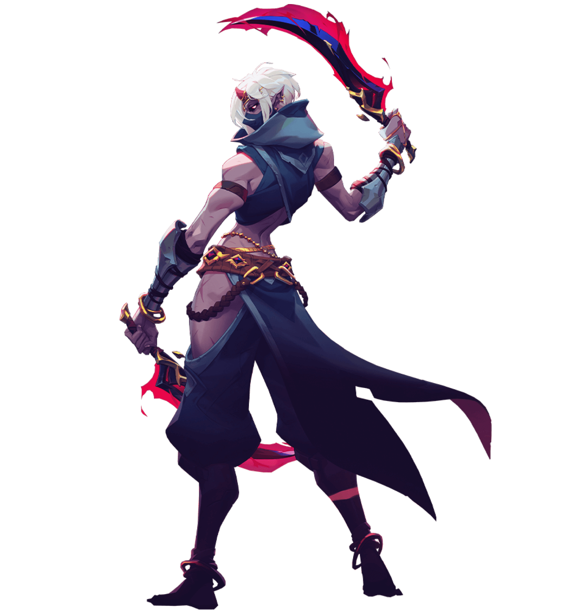

Niss
Descrição:
Niss é de uma raça dos Éldricos Profundos. Ela e seu clã rejeitaram os Precursores, e agora ela é caçada por seu próprio povo. Uma assasina mortal que utiliza poderes sombrios, ela uniu forças com os Rastreadores para se vingar dos Precursores.
Como Arcanista, Niss é capaz de lançar ataques devastadores, mas depende da velocidade e das sombras para esquivar dos inimigos. Ela pode se teleportar pelo campo de batalha e invocar clones de sombra para atacar.
| Niss | |
|---|---|
| The Shadow Dancer | |
|  | |
| Classe |
|
Arma Assinatura |
 Fio da Noite
Fio da Noite
|